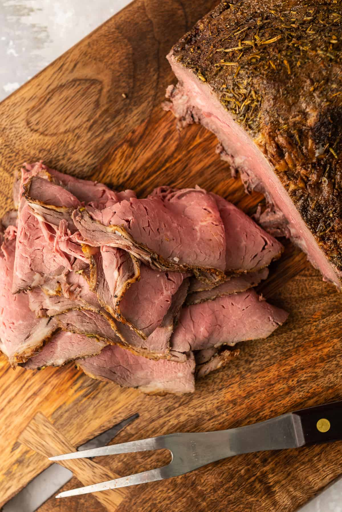

Lasagna

This rump roast in mushroom soup and beef broth is tender and very moist. It's made in the slow cooker, and is very easy to make. Raw vegetables, such as carrots and potatoes, may be added at the start of the cooking time, if desired. My whole family loves this recipe. The leftovers also make great roast beef sandwiches.
Incredients
- 3 pounds rump roast
- 1 (10.75 ounce) can condensed cream of mushroom soup
- 1 (10.5 ounce) can condensed beef broth
Steps
- Cook the meat: Place rump roast in a slow cooker. Pour in condensed cream of mushroom soup and condensed beef broth. Cook on LOW for about 8 hours.